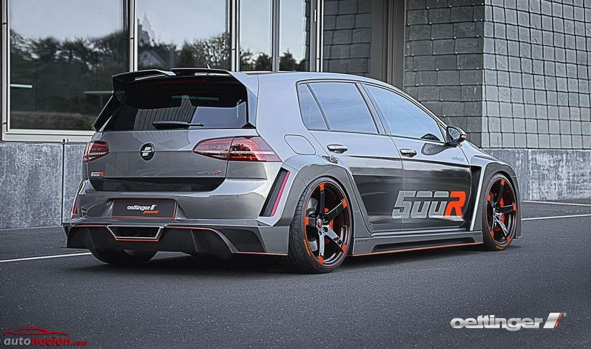

Volkswagen es una marca alemana fundada en 1937 y con sede en Wolfsburgo, Alemania. La empresa fabrica coches compactos, berlinas, SUV y vehículos eléctricos. Es una de las marcas más conocidas por modelos como el Golf, el Polo, el Passat y el Tiguan.
